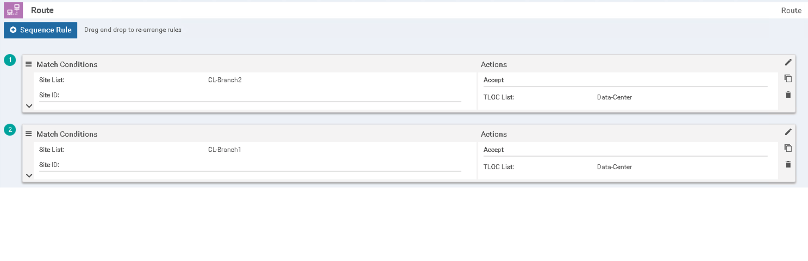

Task 7 - Creating Hub and Spoke Topoloy
This task will walk you through the steps to create Hub and Spoke topology for all branches.
Step 1: Verify vEdge routes for VPN10, VPN20 and VPN30
In this step we will SSH to the vEdge in Branch1 and Branch2 and verify routing table showing all connectios are fully mesh.
-
Launch Mputty application from the Remote desktop by clicking on it's icon on the desktop:

-
Using MPutty on your Remote Desktop session, initiate a SSH session to the BR1-vEdge with IP address of 198.18.134.105 this vEdge (BR1-vEdge). You can use credentials of
adminandadminfor authentication.- If prompted for "Putty Security Alert" then Trust the host by clicking "Yes" on dialog box.
- The SSH credentials (username and password) are
adminandadminrespectively
Note: If admin/admincredentials do not work then you may try usingcisco/ciscoorcisco1/cisco1 -
On the SSH connection, execute the below command to view configuration of VPN 20 on BR1-vEdge:
show run vpn 20
Below screenshot shows VPN 20 configs:
Below screenshot BR2-vEdge for VPN20:
- Execute below command to verify the routing table for VPN 20 on both vEdge:
show ip route vpn 20
As shown in the output in the below screenshot, preffix 10.20.2.1/32 (BR2 VPN 20 Loopback20) is directly received from TLOC IP 10.4.0.1 (BR2-TlOC) from both links (MPLS and Private1).
Also preffix 10.20.100.1/32 (DC-vEdge loopback20) is directly received from TLOC IP 10.1.0.1 (DC-vEdge) from both links (MPLS and Private1).
- Lets look at the screenshots from BR2 which shows that all preffixes are directly received from respective vEdges.
Below is the output for DC-vEDGE
-
Let's verify the same using vManage
- Open Chrome Browser from Workstation and click Viptela vManage from Bookmark Toolbar
At the login page enter user/pass: admin/admin and login.

Verify the traffic path using vManage. Open vManage select Monitoring>Network
- Select BR1-vEdge

- Select Troubleshooting
- Select Trace Route

- Enter Destination IP, select *VPN-20 and click Start**
You can verify that the traffic is going directly to BR2-vEdge

Follow the same steps and verify BR2-vEdge traffic path for VPN-20 towards BR1-vEdge. You will observe the below output.

| Note: |
|---|
| Follow the same steps to verify VPN10 and VPN30 |
Step 2: Configure Policy on vManage to create Hub and Spoke Topology
-
Configure Hub and Spoke policy from vManage.
First we will create Site list, VPN list and TLOC list which will be referred by the policy in the later steps
- Click Configuration>Template

- Click Add Policy
- Select Site and click New Site List, enter the details as per below table and click Add.
Fill in Site details as per table below
Site Name Site Number Data-Center 100 CL-Branch1 300 CL-Branch2 400 AllBranches 300-499 Note: You have to add each site seperately. 
Once you enter all the sites, below is how the List will look like.
- Now Select TLOC, click New TLOC List, enter the details as per below table then click Add.
Fill in TLOC details as per table below
Site Name TLOC Color Encap Data-Center 10.1.0.1 private1 ipsec Data-Center 10.1.0.1 mpls ipsec CL-Branch1 10.3.0.2 private1 ipsec CL-Branch1 10.3.0.2 mpls ipsec CL-Branch2 10.4.0.1 private1 ipsec CL-Branch2 10.4.0.1 mpls ipsec Enter Data-Center TLOC values for color mpls and click Add TLOC
Enter Data-Center TLOC values for color private1 and click Save
Repeat the same step for Branch 1 and 2 TLOCs, below is how the output will look like once you complete this task.
- For adding VPN List Select VPN, click New VPN List, enter the details as per below table then click Add.
VPN Name VPN Number BusinessVPN 20 AppVPN 10 Marketing 30 
Repeat the same task for AppVPN and Marketing. Once the task is complete, below is how the VPN list looks like.
-
Click Next, below page will open. Click Add Topology then click Custom Control (Route & TLOC)

Below page will open, on the Middle-Right corner, click pencil icon
Change the Default Action from Reject to Accept, then click Save Match And Action

Verify Default Action is changed to Accept
-
Enter Name and Description and click Sequence Type
- Name:
Hub-Spoke - Description:
Hub and Spoke Topology

Click Route
- Name:
-
Click Sequence Rule

Click Site and under Site list Select CL-Branch1, then click Action
Select Accept then click TLOC. Under TLOC List enter Date-Center then click Save Match And Actions

Repeat the same steps for CL-Branch2. Below is the output you complete these steps. Click Save Control Policy

-
Click Next, below screen will appear.

-
Click Next again on Application Aware Routing Screen

-
Enter Policy Name and Description then click New Site List
- Name:
Hub-Spoke - Description:
Hub and Spoke Policy

On Outbound Site List select CL-Branch1 and Cl-Branch2
Click Add
Click Save Policy
- Name:
-
The Hub and Spoke policy is created, verify policy clicking "..." on the right side and select Preview
Below is the snapshot, what will be configured as part of the Hub and Spoke Policy
policy
control-policy Hub-Spoke
sequence 1
match route
site-list CL-Branch2
!
action accept
set
tloc-list Data-Center
!
!
!
sequence 11
match route
site-list CL-Branch1
!
action accept
set
tloc-list Data-Center
!
!
!
action accept
set
tloc-list Data-Center
!
!
!
sequence 41
match tloc
site-list AllBranches
!
action reject
!
!
default-action accept
!
lists
site-list AllBranches
site-id 300-499
!
site-list CL-Branch1
site-id 300
!
site-list CL-Branch2
site-id 400
!
tloc-list Data-Center
tloc 10.1.0.1 color mpls encap ipsec
tloc 10.1.0.1 color private1 encap ipsec
!
!
!
apply-policy
site-list CL-Branch1
control-policy Hub-Spoke out
!
site-list CL-Branch2
control-policy Hub-Spoke out
!
!
-
Click OK, then activate the policy clicking "..." on the right side and select Activate

-
Click Activate again

The process will start and you can track the status from the Status Bar, once the task is sucessfully complete. You will Status as Sucess

Below is the output once the task is sucessfully completed.

-
Verify the policy. Launch Mputty application from the Remote desktop and login to BR1-vEdge and run the following command
show ip route vpn 20
You can notice that the preffix 10.20.2.1/32 (BR2 VPN 20 Loopback20) is now received from TLOC IP 10.1.0.1 (DC-TlOC) from both links (MPLS and Private1).

Verify the same from BR2 and you see prefixes are received from DC.
-
Verify the traffic path using vManage. Open vManage select Monitoring>Network
Select BR1-vEdge
Select Troubleshooting
Select Trace Route
Enter Destination IP, select *VPN-20 and click Start**
You can observe that the traffic is now going via DC-vEdge Loopback IP 10.200.100.1 towards BR2-vEdge.
Now Verify BR2-vEdge traffic path for VPN-20 towards BR1-vEdge. You will observe the below output.
Verify connectivity between Both Branches and Data Center on all VPNs (10, 20, 30)